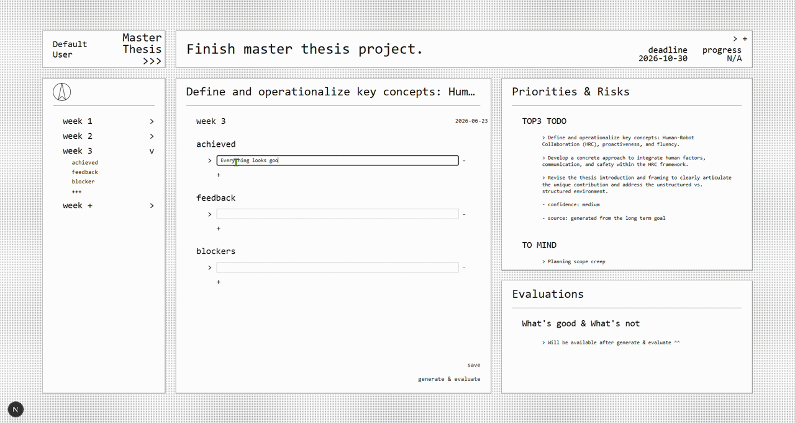

When I was doing my master thesis, we always faced the challenge of keeping track of our progress and adjusting our plans as new information emerged.
This remeinds of some other similar situations where we need to constantly update our plans and prioritities based on the latest information, while also keeping the big picture in mind.
To address this challenge, I designed a tool called Plan Navigator to help the users to navigator their workflows among changing situations.
First, user should initialize the project by setting up its long-term and general goal.
For instance, the long-term goal of a master thesis project could be "Finish master thesis project", which is summarized from the project description by AI, and the deadline could be "2026-10-30".
Every week, users can what they have achieved, what feedback they have received, and what blockers they have encountered.
After saving the weekly updates, the tool will analyze the progress and generate the top3 prioritities and risks for the next week, which will be presented on the next week's planning page.
Since the duration of the project could be long, thus the user input will be accumulated much over time.
LLM is used to compress the weekly updates and recording key pivots if exist.
RAG is used to retrieve relevant information for the next week's planning.